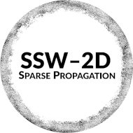

|  |
SSW-2D Propagation module
V.0.1
The core of the propagation by split-step wavelets
|
Compute the threshold values for wavelet compressions. More...
Compute the threshold values for wavelet compressions.
Compute the threshold values for wavelet compressions V_s (for the signal) and V_p (for the propagator) from the number of iterations and the maximal admissible error
| [in] | N_x | Number of iterations in the propagation process |
| [in] | error_ex_dB | Maximum acceptable error from wavelet compression (in dB) |
| [out] | threshold_V_s | Compression threshold we apply on the signal |
| [out] | threshold_V_p | Compression threshold on the propagator |
1.8.17